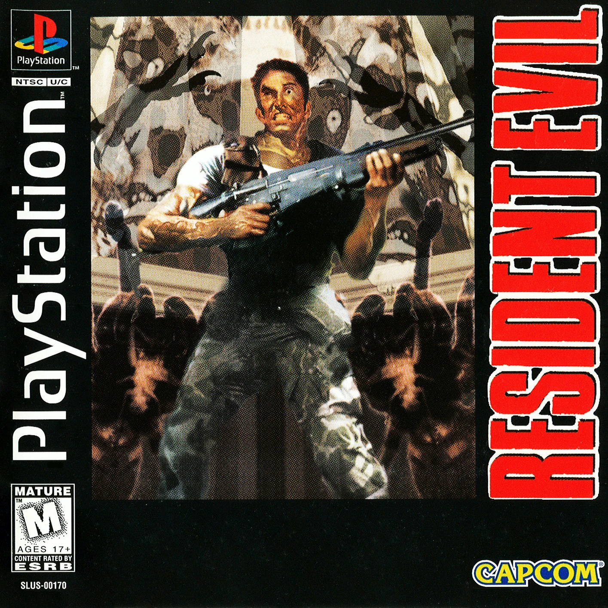

Resident Evil 1, llamado Biohazard (バイオハザード Baiohazādo?) originalmente en Japón, es un videojuego del género survival horror desarrollado por Capcom y fue el primer videojuego de la saga Resident Evil. Fue publicado originalmente en el año 1996 para la plataforma PlayStation y posteriormente fue portado para la consola Sega Saturn y para PC en 1997, además de volver a ser publicado luego dos veces para PlayStation, la primera en 1997 en forma de una versión expandida titulada Director's Cut que incluía un nuevo modo de juego y la segunda en 1998 titulada DualShock Version que incluía una nueva banda sonora y soporte para el mando DualShock.

El juego se desarrolla en 1998, en una ciudad ficticia de los Estados Unidos llamada Raccoon City, la cual es el escenario de un brote viral que convierte a los ciudadanos en zombis. El jugador controla a uno de los miembros del equipo Alfa de la unidad S.T.A.R.S. del departamento de policía de la ciudad, quienes se refugian en una mansión infestada de zombis y criaturas mutantes mientras intentan sobrevivir y descubrir la verdad detrás del brote viral.
El juego fue un gran éxito comercial y de crítica, y se considera uno de los mejores videojuegos de la historia. Fue elogiado por su atmósfera tensa, su historia intrigante y su jugabilidad desafiante. El éxito del juego llevó a la creación de una franquicia que incluye numerosos videojuegos, películas, cómics y otros productos relacionados.
En 2002, se lanzó un remake del juego para la consola GameCube, el cual presentaba gráficos mejorados, una jugabilidad actualizada y una historia ligeramente modificada. Este remake también fue muy bien recibido por la crítica y los fans de la serie.
La trama del juego comienza con la llegada de Chris, Jill y Wesker a una mansión situada en el bosque. Ahí ellos se encontrarán con muertos vivientes morando por los pasillos y las habitaciones. En ese lugar, ellos intentarán escapar sin ser devorados por los perros que se encuentran en el exterior. Pronto, son testigos de los experimentos realizados por la empresa más importante de la ciudad, y de una lista de traiciones que llega hasta el propio cuerpo de S.T.A.R.S.
Tras ponerse en contacto con Brad, el piloto del helicóptero, lograrán escapar de este lugar, aunque, las pesadillas les acompañaran de por vida.
Julio de 1998: Raccoon City, una próspera comunidad ubicada en la zona del medio oeste de los Estados Unidos nota como su tranquilidad se ve violentamente interrumpida cuando una serie de espeluznantes asesinatos tienen lugar en las afueras de la ciudad, en la zona boscosa perimetral localizada en las montañas Arklay. Las muertes tenían algo en común: todas las víctimas presentaban indicios de haber sido asesinadas de una forma que recuerda al canibalismo. Ante lo grave de los acontecimientos, el ayuntamiento de la ciudad decide enviar al equipo Bravo de la fuerza especial de la policía local llamada S.T.A.R.S. a investigar pero se pierde todo contacto con ellos durante 24 horas.
Después de perder contacto con el equipo Bravo, se manda el 24 de julio de 1998 al equipo Alfa a encontrar al equipo Bravo y continuar la investigación. El equipo Alfa comienza a sobrevolar el bosque de las montañas Arklay en la búsqueda de sus compañeros perdidos. Tras varios minutos de vuelo logran localizar el helicóptero del equipo Bravo derribado, aunque tras inspeccionar los restos, no encuentran sobreviviente alguno.
Mientras inspeccionan la zona, un miembro del equipo, Joseph Frost, encuentra una mano humana cercenada sujetando una pistola.
De repente, el equipo Alfa es atacado por una jauría de Cerberus, unas criaturas con forma canina de aspecto deforme que matan a Joseph Frost al atacarlo por sorpresa mutilando su cuerpo salvajemente. Brad el piloto del helicóptero del equipo Alfa, es poseído por el pánico y despega horrorizado dejando atrás a sus compañeros y estos al verse abandonados, huyen de la jauría de caninos mutados hacia una mansión cercana que creen que está deshabitada (durante la carrera a la mansión Chris Redfield pierde su pistola, por lo que los jugadores no comienzan con esta cuando juegan utilizando a Chris). Aunque se enteran más tarde durante el transcurso del videojuego que esta mansión es el fondo de investigación del laboratorio Arklay disfrazado de una mansión y es propiedad de la familia Spencer.
Atrapados en el interior de la mansión, los cuatro restantes miembros del equipo Alfa (Jill Valentine, Chris Redfield, Barry Burton y Albert Wesker) se separan para buscar una salida de la mansión además de pistas para explicar los asesinatos; de repente se oye un disparo y es en este punto donde el jugador toma el control de Jill o Chris y explora la mansión con el personaje seleccionado.
Uno de los primeros descubrimientos es un miembro del equipo Bravo, Kenneth J. Sullivan que está siendo devorado por un zombi, así como el cadáver de Forest Speyer, a Richard Aiken a Rebecca Chambers y finalmente a Enrico Marini, capitán del equipo Bravo quien muere asesinado sin que Chris o Jill pudieran evitarlo. La mansión resulta estar llena de secretos. Documentos dispersos y discos de computadora sugieren que una serie de experimentos ilegales se están ejecutando en la propiedad de la Corporación Umbrella, una multinacional dedicada al desarrollo de productos farmacéuticos y otros derivados. Los zombis y otros monstruos son los resultados de estos experimentos, que han expuesto a los seres humanos y varios animales a un peligroso agente viral patógeno conocido como el virus-T el cual fue liberado intencionalmente por uno de los fundadores de la corporación, James Marcus a manera de vengarse de Umbrella por su asesinato.
Después de navegar por una serie de túneles, vías de comunicación, y otros edificios en la propiedad, Chris y Jill descubren un laboratorio secreto subterráneo que contiene registros detallados de los experimentos de la Corporación Umbrella. En el laboratorio, Wesker revela su identidad: es un doble agente que trabaja para Umbrella quien ha utilizado a sus subalternos como conejillos de indias para ponerlos a prueba ante las armas biológicas creadas por el virus-T y finalmente libera al "Tyrant T-002", un monstruo humanoide gigante creado a través de una exposición prolongada al virus-T. Tras la liberación, el Tyrant mata a Wesker atravesándole sus garras.
Chris/Jill aparentemente matan al Tyrant utilizando armas de fuego y luego activan el programa de auto-destrucción para poner fin a los experimentos de laboratorio. Después Chris/Jill contacta al helicóptero de rescate, cuando el Tyrant reaparece a través del techo del laboratorio en la almohadilla de aterrizaje del helicóptero y los ataca de repente. Resistente a las balas, el Tyrant es finalmente asesinado cuando Brad, el piloto del helicóptero, arroja un lanzacohetes y Chris/Jill lo utiliza para destruir completamente a la criatura. Chris Redfield y Jill Valentine escapan en el helicóptero antes de que la mansión explote y el videojuego finalmente termina.
El final varía en función de la secuencia de decisiones tomadas por el jugador mientras exploraba la mansión. Siempre y cuando el jugador escape con dos compañeros, el final ocurre como se ha descrito anteriormente. El rescate de sólo uno o ninguno de sus compañeros de equipo cambia el resultado, en particular el destino del laboratorio y el Tyrant.
Menu Principal
{kind=link}
{kind=link}
{kind=link}
{kind=link}
{kind=link}
{kind=link}
{kind=link}
{kind=link}